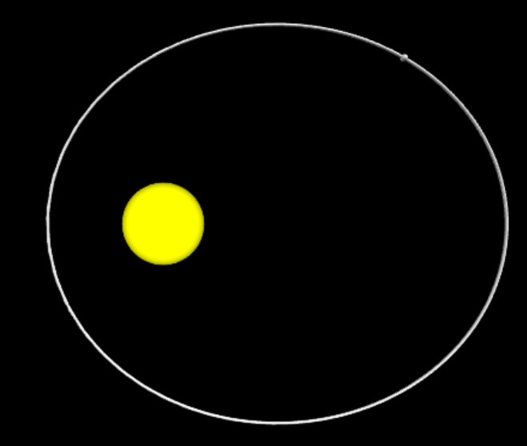

Canhão de Newton
Experimento mental criado por Isaac Newton para demonstrar a formação das órbitas.
Abrir Simulação
Análise de Órbitas
Estude órbitas circulares, elípticas, parabólicas e hiperbólicas.
Abrir Simulação
Gravitação
Simule a interação gravitacional entre dois corpos e investigue seus movimentos.
Abrir Simulação